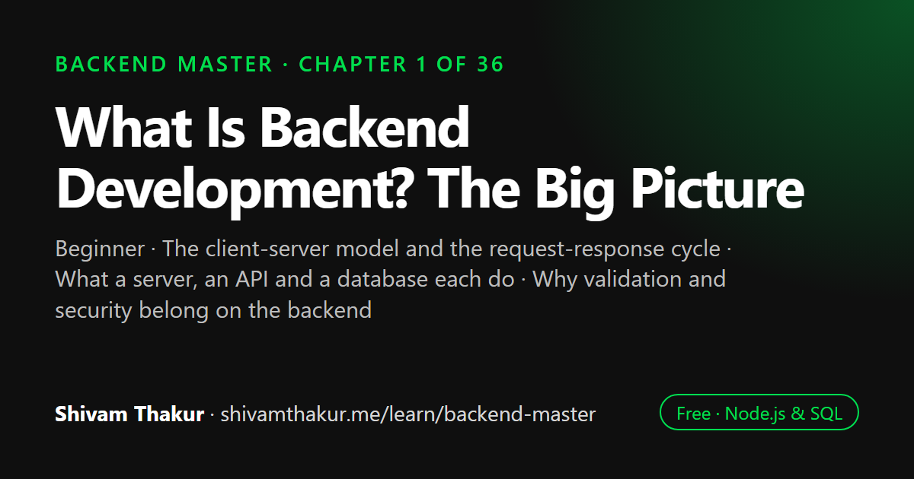

Chapter 1 of 36 · Beginner
What Is Backend Development? The Big Picture
Welcome to the Backend — What It Is and the Big Picture

Backend development is building the programs that run on servers, store data and answer requests from browsers and apps. This chapter explains the client-server model, what happens between a click and a response, what a backend developer is responsible for, and introduces ShopLine, the e-commerce project used throughout the course.
In this chapter you will learn
- The client-server model and the request-response cycle
- What a server, an API and a database each do
- Why validation and security belong on the backend
- The skills and layers of a backend system
- The ShopLine project and the course roadmap
1.0 How To Read This Book
Before we write any code, let's be clear about what this book is, and what it is not.
This is not a "learn Express in 30 minutes" tutorial. Tutorials like that teach you to copy a pattern. When something breaks at 2 a.m. in production, a copied pattern can't help you, because you never learned why it worked.
What this book is: a ground-up education in how backend systems actually work, and how to build, secure, test, deploy and debug them. By the end you will be able to take a vague idea ("users should be able to buy things and get an email receipt") and know:
- What pieces you need (server, database, cache, queue, and so on).
- Why each piece exists and what it costs you.
- How to build it so it is secure and does not fall over under load.
- How to find the problem when it breaks anyway.
What you need before starting: basic JavaScript. You should be comfortable with variables, functions, arrays, objects, and if/for. If you've also met async/await that's a bonus, but we'll revisit it. You do not need to know anything about servers, databases, HTTP, Linux or the cloud. We start from zero.
How each chapter is built. Every chapter follows the same shape:
- A "why does this exist" opening, usually with something broken first.
- Concepts explained with real-life analogies, then runnable code.
- Callout boxes you'll learn to love: 💡 Did You Know?, 🎯 Interview Pattern, 🧠 Memory Trick, ⚠ Common Mistake, 🚀 Pro Tip, 📌 Quick Revision.
- A summary, cheat sheet and mind map at the end.
- 20 multiple-choice questions, 20 hands-on exercises, 5 interview questions and 3 real projects.
How to get the most out of it. Type the code yourself. Don't paste it. Break it on purpose. Change a number and predict what happens before you run it. You learn backend by watching systems fail in small, safe ways.
1.1 Why Does the Backend Exist?
Imagine you build a beautiful to-do list web page. You open it in your browser, add "Buy milk", and it shows up. You close the tab, reopen it, and... the list is empty.
Why? Because everything you did lived inside your browser's memory, on your device. When the tab closed, it vanished.
Now think about what you actually want from a real app:
- Your to-dos are still there tomorrow, on your phone and your laptop.
- You can log in, and nobody else can see your list.
- When you share a list with a friend, they see the update.
- The app can send you a reminder email at 9 a.m. even when your browser is closed.
- It keeps working when a million other people use it at the same time.
None of that can happen inside a single browser tab. You need a program that:
- Runs somewhere that is always on (not on one person's laptop).
- Stores data permanently.
- Decides who is allowed to do what.
- Talks to many users at once.
- Can do work in the background.
That program is the backend. It's the part of an application that users never see but that makes everything they do see actually work.
Real-Life Analogy: The Restaurant
Hold on to this analogy; we'll use it throughout the book.
| Restaurant | Software |
|---|---|
| The dining room: menus, tables, decor, what the customer sees | The frontend: the website or mobile app |
| The customer | The user (really, the user's browser or app: the client) |
| The waiter who carries orders and food | The API and the network |
| The kitchen: where the food is actually made | The backend: logic and processing |
| The pantry / fridge | The database |
| The manager checking reservations and ID | Authentication and authorization |
| A sticky note: "table 5 needs dessert in 10 min" | A job queue |
| Opening a second kitchen when it gets busy | Scaling |
Customers never walk into the kitchen. They talk to a waiter, who passes the order in and brings the food back. That's the backend in one sentence: a kitchen that follows rules, keeps a pantry, and answers orders from waiters, many at once, reliably, all day.
1.2 The Client-Server Model
Almost everything on the internet follows one pattern:
A client sends a request. A server sends back a response.
- Client: whoever asks. A browser, a mobile app, another server, a command-line tool, a smart fridge.
- Server: the program that answers. It sits and waits ("listens") for requests.
- Request: a message saying "I want this" or "please do this".
- Response: a message saying "here it is", "done", or "sorry, that failed".
┌────────────┐ 1. Request: "give me user 42" ┌────────────┐
│ CLIENT │ ─────────────────────────────────────▶ │ SERVER │
│ (browser, │ │ (your Node │
│ app, ...) │ ◀───────────────────────────────────── │ program) │
└────────────┘ 2. Response: { name: "Asha" } └────────────┘Two important facts hide in this simple picture.
Fact 1: The client always starts the conversation. A server cannot just "reach out" to your browser whenever it wants (there are tricks for this, such as WebSockets, covered in Chapter 10, but even those begin with the client connecting first).
Fact 2: The server is a program, not a magic cloud. "The server" is simply software running on some computer that is turned on and connected to the internet. Your laptop can be a server. In fact, in a few minutes, it will be.
1.3 Frontend vs Backend vs Full-Stack
| Frontend | Backend | |
|---|---|---|
| Runs on | The user's device (browser, phone) | A machine you control (a server, the cloud) |
| Main job | Show things, capture user input | Store data, enforce rules, do the heavy work |
| Languages | HTML, CSS, JavaScript/TypeScript | Any: JavaScript (Node), Python, Java, Go, C#, Ruby, PHP… |
| Can you trust it? | No. The user can modify anything | Yes. You control the machine |
| Typical worries | Layout, accessibility, UX, bundle size | Correctness, security, speed, uptime, data |
Notice the "Can you trust it?" row. It is the single most important idea in backend security, so burn it into your memory:
Never trust anything that comes from the client.
A user can open browser dev tools, edit your JavaScript, and send any request they like with any values they like. If your frontend hides the "Delete everyone's account" button from normal users, that is cosmetic. The backend must still refuse the request.
A full-stack developer works on both sides. A backend developer focuses on the server side but must understand how the frontend consumes their work.
1.4 What Does a Backend Actually Do?
Every backend, from a college project to a bank, is built from the same handful of responsibilities. Learning them as a checklist makes the whole field less scary.
- Receive requests over the network (HTTP, WebSockets, gRPC…).
- Validate input: is this data well-formed and sane?
- Authenticate: who are you?
- Authorize: are you allowed to do this?
- Run business logic: the rules of your product ("an order over ₹5,000 gets free shipping").
- Read and write data in a database.
- Talk to other services: payments, email, SMS, maps, AI.
- Do background work: send emails, resize images, generate reports.
- Return a response, success or a useful error.
- Stay alive: log, monitor, recover, scale, and be secure while doing all of the above.
This book is organized around these ten jobs. Here's where each lives:
| Responsibility | Chapters |
|---|---|
| 1. Receive requests | 2, 3, 5, 6, 7, 8, 9, 10 |
| 2. Validate | 7, 23 |
| 3–4. Auth | 21, 22 |
| 5. Business logic | 11 |
| 6. Data | 12–20 |
| 7. Other services | 10, 26, 28 |
| 8. Background work | 28 |
| 9. Responses & errors | 8, 26 |
| 10. Staying alive | 24–25, 27, 29–33 |
1.5 The Life of a Request (The Big Picture)
Let's follow one request all the way through. A user opens a shopping app and taps "My Orders".
USER'S PHONE YOUR INFRASTRUCTURE
─────────── ───────────────────
App ┌──────────────┐
│ 1. DNS lookup: "api.shopline.com" → IP │ DNS │
├───────────────────────────────────────────────▶│ │
│◀───────────────────────────────────────────────┤ │
│ └──────────────┘
│ 2. Open TCP connection + TLS (HTTPS)
│ 3. Send: GET /orders (with login token)
▼
┌─────────────┐ 4. forward ┌──────────────┐ 5. run ┌──────────────┐
│ Load │ ─────────────▶ │ Your Node │ ───────────▶ │ Middleware │
│ balancer │ │ server │ │ log, parse, │
└─────────────┘ └──────────────┘ │ auth check │
└──────┬───────┘
│ 6. route
▼
┌─────────────┐ ┌──────────────┐
│ Cache │◀────────▶│ Handler / │
│ (Redis) │ 7. check │ business │
└─────────────┘ cache │ logic │
└──────┬───────┘
│ 8. query
▼
┌──────────────┐
│ Database │
│ (PostgreSQL) │
└──────┬───────┘
◀─────────── 10. Response: 200 OK + JSON list of orders ◀──────────┘
9. build the responseTen steps, and we've skipped some (firewalls, rate limiters, logging, tracing). Don't memorize it now. Each box becomes a chapter. For this chapter, just notice the shape:
- Requests flow in through layers.
- Each layer has one job.
- The database is usually the slowest, most precious box.
- Responses flow back out the same path.
1.6 Your First Backend (Let's Build One Right Now)
Enough theory. Let's make a real server in under 15 lines, using nothing but Node.js.
Step 0: Install the tools
You need three things:
- Node.js (current LTS version) from nodejs.org. Check it worked:You should see something likeShell
node --versionv22.x.x(any current LTS is fine). - A code editor. VS Code is a good default.
- A way to send requests.
curlcomes with macOS, Linux and modern Windows. Alternatively use Postman or Thunder Client (a VS Code extension).
Step 1: The smallest possible server
Create a folder hello-backend and a file server.js:
// server.js
const http = require('node:http'); // built into Node, nothing to install
const server = http.createServer((req, res) => {
res.statusCode = 200;
res.setHeader('Content-Type', 'text/plain');
res.end('Hello from my first backend!\n');
});
server.listen(3000, () => {
console.log('Server is listening on http://localhost:3000');
});Run it:
node server.jsOutput:
Server is listening on http://localhost:3000The terminal now hangs. That's correct! It's not frozen; it's waiting for requests. Open a second terminal and play client:
curl http://localhost:3000Output:
Hello from my first backend!🎉 You just built a server, and curl was the client. Open http://localhost:3000 in your browser and you'll see the same text; the browser is another client.
Step 2: Understand every line
const http = require('node:http');Node ships with a built-in module for speaking HTTP. The node: prefix says "this is a built-in, not something from npm."
const server = http.createServer((req, res) => { ... });We give Node a callback function: "whenever a request arrives, call this." Node hands us two objects:
req(request): everything the client sent: method, URL, headers, body.res(response): the tool we use to answer.
res.statusCode = 200;A number telling the client how it went. 200 means "OK". You'll meet many more (404 not found, 500 server error…) in Chapter 3.
res.setHeader('Content-Type', 'text/plain');Headers are metadata. Here we say "the body is plain text."
res.end('Hello...');Send the body and finish the response. If you forget res.end(), the client waits forever. This is the classic first bug.
server.listen(3000, ...);Attach the server to port 3000. A computer has 65,535 ports, like apartment numbers in a building. The IP address finds the building (computer); the port finds the apartment (program).
Step 3: Make it respond differently to different requests
A real backend looks at what was asked. Let's inspect the request:
const http = require('node:http');
const server = http.createServer((req, res) => {
console.log(`${req.method} ${req.url}`);
if (req.method === 'GET' && req.url === '/') {
res.setHeader('Content-Type', 'text/plain');
res.end('Welcome to ShopLine\n');
} else if (req.method === 'GET' && req.url === '/products') {
const products = [
{ id: 1, name: 'Notebook', price: 120 },
{ id: 2, name: 'Pen', price: 15 },
];
res.setHeader('Content-Type', 'application/json');
res.end(JSON.stringify(products));
} else {
res.statusCode = 404;
res.setHeader('Content-Type', 'application/json');
res.end(JSON.stringify({ error: 'Not found' }));
}
});
server.listen(3000, () => console.log('Listening on 3000'));Try it (restart the server first with Ctrl+C, then node server.js):
curl http://localhost:3000/productsOutput:
[{"id":1,"name":"Notebook","price":120},{"id":2,"name":"Pen","price":15}]curl -i http://localhost:3000/nothingOutput:
HTTP/1.1 404 Not Found
Content-Type: application/json
...
{"error":"Not found"}(-i tells curl to print the response headers too.)
Congratulations: that is an API. It receives requests, looks at the method and path, and returns data as JSON. Everything else in this book is about doing this better, safer, faster, and at scale.
1.7 Why This Tiny Server Is Not Production-Ready
It's tempting to think "I built a server, so I'm a backend developer." Not yet. Let's list what our 20-line server gets wrong. This list is the table of contents of the rest of the book.
| Problem | What happens | Where we fix it |
|---|---|---|
| Data is hard-coded | Restart the server and everything changes | Databases, Ch. 12–20 |
| No input validation | Garbage in, crashes out | Ch. 7, 23 |
| No authentication | Anyone can do anything | Ch. 21–22 |
| Uses plain HTTP | Passwords travel readable by anyone on the network | Ch. 2–3, 23 |
| One crash kills it | An uncaught exception stops the process; every user gets errors | Ch. 5, 26, 31 |
| Handles one CPU core | Wastes most of a modern machine | Ch. 5, 29 |
| No logs | You can't tell what happened when something breaks | Ch. 25 |
| No tests | Every change is a gamble | Ch. 24 |
| Only runs on your laptop | Nobody else can reach it | Ch. 31–32 |
| One instance | When it dies or gets busy, the app is down | Ch. 29–30 |
Let's see one of these in action. Add this route to your server and watch what happens:
} else if (req.url === '/crash') {
throw new Error('Oops'); // simulates a bug
}Request /crash once. The entire server process dies. Every other user is now disconnected, not just the one who hit the bug. Compare this with a frontend bug, which only hurts one user's tab. A backend bug is shared by everyone. That's why backend engineering has such a strong culture of care, testing and monitoring.
1.8 The Anatomy of a Backend (Layers and Components)
As systems grow, we stop writing one giant file and recognize standard components. Here's the map of the territory. Every item gets its own chapter(s).
┌────────────────────────────────────┐
Clients ─────────────▶ │ Edge: DNS, CDN, Firewall, WAF │
(web, mobile, partners) └───────────────┬────────────────────┘
▼
┌────────────────────────────────────┐
│ Load balancer / API gateway │
└───────────────┬────────────────────┘
▼
┌──────────────────────────────────────────────────────────┐
│ YOUR APPLICATION SERVERS │
│ ┌────────────┐ ┌─────────────┐ ┌──────────────────┐ │
│ │ Routing & │─▶│ Business │─▶│ Data access layer│ │
│ │ middleware │ │ logic │ │ (ORM / queries) │ │
│ └────────────┘ └─────────────┘ └──────────────────┘ │
└───────┬───────────────┬───────────────────┬──────────────┘
▼ ▼ ▼
┌─────────────┐ ┌─────────────┐ ┌───────────────────┐
│ Cache │ │ Database │ │ Message queue │
│ (Redis) │ │ (Postgres) │ │ (jobs, events) │
└─────────────┘ └─────────────┘ └─────────┬─────────┘
▼
┌───────────────┐
│ Workers │──▶ Email, SMS,
│ (background) │ payments...
└───────────────┘
Cross-cutting concerns around everything:
Auth • Logging • Monitoring • Testing • Security • CI/CD • DockerWhat each component is for (one line each)
- DNS: the internet's phone book: turns
shopline.cominto an IP address. - CDN: copies of static files (images, CSS) stored close to users so they load fast.
- Firewall / WAF: blocks obviously malicious traffic before it reaches you.
- Load balancer: spreads incoming requests across several copies of your server.
- API gateway: a front door that handles shared jobs (auth, rate limits, routing) for many services.
- Application server: your code, the star of this book.
- Database: permanent, organized storage. The source of truth.
- Cache: a fast, temporary copy of data to avoid hitting the database repeatedly.
- Message queue: a to-do list for background work, so users don't wait for slow tasks.
- Workers: programs that pick jobs off the queue and do them.
You do not need all of these on day one. A small app is often just one server + one database. Good engineers add each component only when a real problem demands it. Adding a queue "just in case" is how projects drown in complexity.
1.9 Types of Backend Architecture (A Preview)
You'll hear these words constantly. A quick preview so they aren't scary; each gets a full treatment later.
| Style | Meaning | Analogy | Best when |
|---|---|---|---|
| Monolith | One program contains everything | One big restaurant with one kitchen | Starting out, small teams (most apps!) |
| Modular monolith | One program, strict internal modules | One kitchen with separate stations | Growing apps wanting order without chaos |
| Microservices | Many small independent programs | A food court with many stalls | Large orgs with many teams |
| Serverless | You write functions; the cloud runs them on demand | Catering on request, no kitchen to own | Spiky or low traffic, event handlers |
Beginners often think microservices are "the professional way." They aren't. They solve organizational and scaling problems and create distributed-systems problems. Most successful products started as a monolith. Chapter 33 explains this honestly.
1.10 The Backend Engineer's Skill Map
Backend work is wider than one tool. Here is the skill map this book will give you, with the rough order you'll learn them:
BACKEND MASTER
│
┌──────────┬───────────┬────┴─────┬────────────┬──────────────┐
Internet Servers & Data Security Reliability Ship &
& HTTP APIs & Auth & Scale Operate
│ │ │ │ │ │
DNS, TCP Node, SQL, Hashing, Testing, Docker,
TLS, HTTP Express, indexes, JWT, OAuth, logs, CI/CD,
headers REST, transac- OWASP, caching, cloud,
GraphQL, tions, rate queues, Kubernetes
WebSocket NoSQL, limits load balancing basics
RedisWhich role is this?
| Job title | Typical focus |
|---|---|
| Backend Engineer | APIs, databases, business logic: the core of this book |
| Platform / DevOps / SRE | Deployment, infrastructure, reliability (Parts 5–6) |
| Data Engineer | Pipelines and analytics (a neighbor, not this book) |
| Full-stack | Backend plus frontend |
| Software Architect | Makes the big design choices (Part 7) |
1.11 Backend Languages and Why We Chose Node.js
Backends can be written in almost anything. A quick, honest comparison:
| Language / Runtime | Known for | Trade-off |
|---|---|---|
| JavaScript / Node.js | One language across frontend and backend; great at I/O-heavy work; huge ecosystem | Weak at heavy CPU number-crunching in the main thread |
| Python (Django, FastAPI) | Readability, data science and AI ecosystem | Slower raw execution |
| Java / Kotlin (Spring) | Enterprise standard, mature, strong typing | More boilerplate, heavier |
| Go | Simple, fast, great concurrency, tiny deployables | Smaller ecosystem, fewer abstractions |
| C# / .NET | Excellent tooling, strong performance | Historically Microsoft-centric |
| Ruby on Rails / PHP (Laravel) | Rapid development, huge existing codebases | Performance ceiling, perception |
Why Node.js here?
- If you've read our DSA handbook, you already know JavaScript.
- You can build the frontend and backend in one language.
- Node's event-driven design is a great teaching vehicle for how servers handle many connections (Chapter 5).
- Companies from startups to Netflix and PayPal run it in production.
The important point: concepts transfer. HTTP, SQL, indexes, JWTs, caching, queues and load balancers work the same in every language. Once you master them in Node, picking up Go or Java is mostly learning new syntax.
1.12 Mindset of a Backend Engineer
The code is half of the job. The other half is a way of thinking. Five habits separate hobbyists from professionals:
- Assume everything fails. Networks drop packets, databases time out, disks fill up, users send nonsense. Code the unhappy path with the same care as the happy one.
- Assume users are hostile (or just creative). Validate everything. Never trust the client.
- Think in numbers. "It's fast" means nothing. "p95 latency is 120 ms at 500 requests/second" means something.
- Prefer boring technology. A proven database beats a trendy one you can't debug.
- Make it observable. If you can't see what your system is doing, you can't fix it.
1.13 Meet "ShopLine": The Project That Grows With You
From Chapter 6 onward, one project evolves through the book: ShopLine, an e-commerce backend. We'll add pieces as we learn them:
| Stage | What gets added |
|---|---|
| Ch. 6–8 | Product and order REST API |
| Ch. 13–17 | PostgreSQL schema, queries, indexes, transactions |
| Ch. 19, 27 | Redis caching for product pages |
| Ch. 21–22 | Signup, login, roles (customer, admin) |
| Ch. 23 | Rate limiting, input hardening |
| Ch. 24–25 | Tests, structured logs, metrics |
| Ch. 28 | Background jobs: order emails, invoice PDFs |
| Ch. 31–32 | Dockerized, deployed with CI/CD |
| Ch. 35 | Final capstone: assembled and hardened |
Why e-commerce? It naturally contains every interesting problem: money (transactions), stock (concurrency), users (auth), search, notifications, traffic spikes (sales), and fraud (security). If you can build ShopLine well, you can build most things.
1.14 Common Misconceptions
| Myth | Reality |
|---|---|
| "Backend is just CRUD" | CRUD is the easy 20%. The hard 80% is correctness under concurrency, failure, security and scale |
| "I need to know everything first" | You need the fundamentals. Tools change; fundamentals don't |
| "Frameworks are the skill" | Frameworks are replaceable. HTTP, SQL and design aren't |
| "NoSQL is faster, so use it" | Different trade-offs, not "faster." Most apps are well served by PostgreSQL |
| "More servers fix slow code" | Often the problem is one bad query. Measure before scaling |
| "Microservices are modern, monoliths are bad" | Monoliths are fine, and often best, for years |
| "Security is added at the end" | Security added at the end is mostly security theater |
1.15 Edge Cases and Gotchas Checklist (Chapter 1)
- Server started but nothing happens → did you call
listen? Right port? - Browser says "connection refused" → is the server actually running? Correct port?
-
EADDRINUSEerror → another program (maybe an old copy of your server) is using that port. Stop it or choose another port. - Client hangs forever → you forgot
res.end(). - Code change doesn't show → server wasn't restarted (use
node --watch). - Works on
localhost, fails from another device → the server is bound to localhost only, or a firewall blocks it. - Browser shows JSON as plain text → you didn't set
Content-Type: application/json. - One bad request crashes everyone → unhandled exception; wrap and handle errors (Ch. 6, 26).
1.16 Chapter Summary
- The backend is the always-on, trusted part of an application: it stores data, enforces rules, authenticates users, and does heavy or background work.
- Almost everything on the internet is the client-server model: client requests, server responds, and the client always speaks first.
- Never trust the client. Every rule must be enforced on the server.
- A backend does ten jobs: receive, validate, authenticate, authorize, apply business logic, use data, call other services, run background jobs, respond, and stay alive.
- A request travels through layers: DNS → connection → server → middleware → router → handler → database → response.
- You built a real HTTP server with the built-in
httpmodule, usingreq,res, status codes, headers and JSON. - A 20-line server is not production-ready. The gaps (persistence, security, testing, scaling, deployment) form the rest of this book.
- Start simple (monolith, one database) and add components only when a real problem calls for them.
1.17 Revision Notes
- Server = a program that listens for requests. Client = whoever sends them.
- Port = which program on a machine; IP = which machine.
http.createServer(cb)→cb(req, res)runs once per request.server.listen(port)starts it.- Always end a response with
res.end(). - Status
200OK,404not found,500server error (full list in Ch. 3). - JSON responses need
Content-Type: application/jsonandJSON.stringify. - Frontend = untrusted, user's device. Backend = trusted, your machine.
- Components: edge, load balancer, app servers, database, cache, queue, workers.
- Mindset: FUN-OB.
1.18 Mind Map (ASCII)
BACKEND (Ch. 1)
│
┌──────────────┬─────────────┼──────────────┬──────────────┐
WHAT IT IS MODEL 10 JOBS COMPONENTS MINDSET
│ │ │ │ │
always-on, client ──▶ receive DNS / CDN failure is
trusted, request validate load balancer normal
stores data server ──▶ authenticate app servers distrust input
│ response authorize database measure
restaurant │ business logic cache keep it boring
kitchen client data queue + workers observe
speaks 3rd-party │
first background start simple:
respond server + DB
stay alive1.19 Cheat Sheet
CLIENT-SERVER Client asks → Server answers. Client speaks first.
PORT 1–65535. We use 3000 for dev. 80 = HTTP, 443 = HTTPS.
RUN A FILE node server.js (auto-reload: node --watch server.js)
MINIMAL SERVER http.createServer((req, res) => { res.end('hi') }).listen(3000)
READ REQUEST req.method req.url req.headers
WRITE RESPONSE res.statusCode = 200
res.setHeader('Content-Type', 'application/json')
res.end(JSON.stringify(data))
TEST FROM TERMINAL curl http://localhost:3000/path
curl -i URL (show headers)
curl -X POST -H 'Content-Type: application/json' \
-d '{"a":1}' URL
STOP A SERVER Ctrl + C
PORT ALREADY IN USE EADDRINUSE → stop the other process or change port
GOLDEN RULE Never trust the client.1.20 Key Takeaways
- The backend exists because browsers can't be trusted, can't persist data for everyone, and can't run while closed.
- Every request follows the same journey through layers; understanding the journey is understanding the field.
- A "working" server and a "production" server are separated by persistence, security, testing, observability, scaling and deployment.
- Start with the simplest architecture that works. Complexity must earn its place.
- Concepts outlast frameworks. Learn the why.
1.21 20 Multiple Choice Questions
Tap an answer to check it. Your score updates as you go.
Score: 0 / 0 answered (20 questions)
In the client-server model, who always initiates the conversation?
Which of these is a server in the context of a web app?
Why must validation be done on the backend even if the frontend already validates?
What does a port identify?
In
http.createServer((req, res) => {...}), what isres?What happens if you never call
res.end()?Which status code means "OK"?
What does
EADDRINUSEmean?Which statement about frontend code is TRUE?
Which component is a fast, temporary copy of data to avoid repeated database reads?
What is the purpose of a message queue?
Which architecture puts all functionality in one deployable program?
In the restaurant analogy, the database corresponds to:
Which is NOT one of the ten backend jobs listed in this chapter?
Why does an uncaught exception in a Node server hurt more than a frontend bug?
What does
Content-Type: application/jsontell the client?A good first architecture for a new product is usually:
Which statement about languages for backends is most accurate?
Which command restarts a Node script automatically on file changes (Node 18.11+)?
"Think in numbers" means:
Show the answer key
1-b, 2-b, 3-c, 4-b, 5-b, 6-b, 7-b, 8-b, 9-b, 10-b, 11-b, 12-c, 13-c, 14-c, 15-b, 16-a, 17-b, 18-b, 19-b, 20-b
1.22 20 Hands-on Exercises
Easy (warm-up)
- Install Node and print its version. Write the output in a notes file.
- Run the first server. Visit it in the browser and with
curl. Compare what you see. - Change the port to 4000. Confirm 3000 no longer works.
- Make
/return your name as plain text. - Add
/aboutreturning a JSON object{ "app": "ShopLine", "version": "0.1" }. - Use
curl -iand write down which headers the server sends back. Which did you set yourself? - Start two copies of the server on the same port. Read and explain the
EADDRINUSEerror.
Medium (build)
- Add a
/timeroute returning the current time as JSON. - Add a
/hello?name=Asharoute that greets by name. (Hint:new URL(req.url, 'http://localhost')andsearchParams.) - Log each request as
METHOD URL STATUS time-in-ms. (Hint: useres.on('finish', ...).) - Return
405 Method Not Allowedwhen/productsreceives anything butGET. - Serve a 404 HTML page for unknown routes when the client's
Acceptheader containstext/html, and JSON otherwise. - Make
/products/1return product 1 from an in-memory array, and404if it doesn't exist. - Use
node --watchand edit the greeting while the server runs. Describe what you observe.
Hard (think)
- Accept a
POST /productswith a JSON body, add it to the array, and return201with the created product. (Hint: collectreq.on('data')chunks, parse on'end'.) - Send invalid JSON to Exercise 15 and make the server answer
400instead of crashing. - Add
/crashthat throws, then wrap the handler intry/catchso it returns500and the server stays alive. - Add
process.on('uncaughtException', ...)that logs the error. Explain why continuing after it is risky. - Use
autocannon(npx autocannon http://localhost:3000) to measure requests/second. Record the result, then note what changes if you add a 50 ms artificial delay per request. - Draw by hand the ten-step "life of a request" for your
/productsroute, naming which part is your code and which is not.
1.23 5 Interview Questions
1. What is the difference between frontend and backend? Why can't we just do everything on the frontend? Model answer: The frontend runs on the user's device and shows the interface; the backend runs on infrastructure we control and stores data, enforces rules, and does privileged work. Everything on the frontend is user-controllable, so rules about security, payments and data ownership cannot live there. The frontend also can't persist shared data or run when closed (background jobs, emails).
2. Explain the client-server model. Model answer: A client sends a request over the network to a server, which processes it and returns a response. The client initiates; the server listens on an address and port. One machine/program can be both (a backend calling a payment API is a client of it). The model is stateless at the protocol level in HTTP: each request stands alone.
3. What are the main components of a typical backend system? Model answer: Edge (DNS/CDN/firewall), load balancer, application servers, a primary database, optionally a cache, a message queue with workers, and cross-cutting concerns (auth, logging, monitoring, CI/CD). I'd start with app server + database and add the others when a measured problem needs them.
4. Your Node server crashes on a bad request and takes everyone down. What do you do?
Model answer: Short term: handle the error (validation, try/catch, error middleware) so one request can't kill the process, and run under a supervisor (systemd, Docker restart policy, PM2/Kubernetes) so it restarts. Long term: add logging/alerting to catch it, tests for the case, and multiple instances behind a load balancer so a single crash doesn't cause downtime.
5. Monolith vs microservices: which would you pick for a new product and why? Model answer: Monolith (ideally modular). It's simpler to build, test, deploy and debug, and a small team ships faster. Microservices add network failures, distributed data and operational cost; they pay off when separate teams need independent deploys or specific parts need independent scaling. I'd split later along proven boundaries.
1.24 3 Real Projects
Project 1: "Hello Status" service (beginner, ~1 hour).
Build a server with /health (returns { "status": "ok", "uptime": <seconds> }), /time and /echo?msg=…. Log every request. This /health endpoint becomes a staple for load balancers and deployment checks in later chapters.
Project 2: In-memory Notes API (intermediate, ~3 hours).
Using only the http module: GET /notes, GET /notes/:id, POST /notes, DELETE /notes/:id. Keep data in an array, validate input, return correct status codes (200, 201, 400, 404). Then list five reasons it is not production-ready (data loss on restart is #1). You will fix each of them in later chapters.
Project 3: Request Inspector (intermediate, ~2 hours).
A server that returns, as JSON, everything it knows about the incoming request: method, URL, headers, client IP, and body. Hit it from the browser, curl, and Postman and compare the headers each client sends. This builds the intuition you need for Chapter 3.
1.25 Further Reading
- Node.js docs: "Anatomy of an HTTP Transaction" (nodejs.org → Learn).
- MDN Web Docs: "Client-Server overview" and "What is a web server?"
- The Twelve-Factor App (12factor.net): a short, timeless guide to building deployable backends.
- Martin Kleppmann, Designing Data-Intensive Applications: the long-term goal book; don't read it yet, but keep it in mind.
- Our companion book: The JavaScript DSA Handbook, Chapter 4 (Hashing) and Chapter 27 (System Design Connections), for the data-structure reasoning behind caches and routing.
Up next → Chapter 2: How the Internet Works
You've built a server that answers requests, but the requests got to it "somehow." In Chapter 2 we peel back that magic: IP addresses, DNS, TCP, TLS, and the real latency numbers that shape every design decision you'll ever make.
What Is Backend Development? Start Here: frequently asked questions
What does a backend developer do?
A backend developer builds and maintains the server-side of an application: the APIs that clients call, the databases that store data, the business rules, security, background jobs and the infrastructure that keeps it all running reliably.
What is the difference between frontend and backend?
The frontend is the part users see and interact with in a browser or app. The backend runs on servers, holds the data and rules, and answers the frontend's requests. Anyone can bypass a frontend, so validation and security must live on the backend.
Do I need to know a framework before learning backend?
No. This course starts from the concepts (clients, servers, HTTP, data) and only then introduces Node.js and Express, so you understand what a framework is doing for you.
Which language is used in this course?
JavaScript on Node.js 22, with SQL for PostgreSQL. The ideas apply equally to Python, Java, Go and other backend languages.